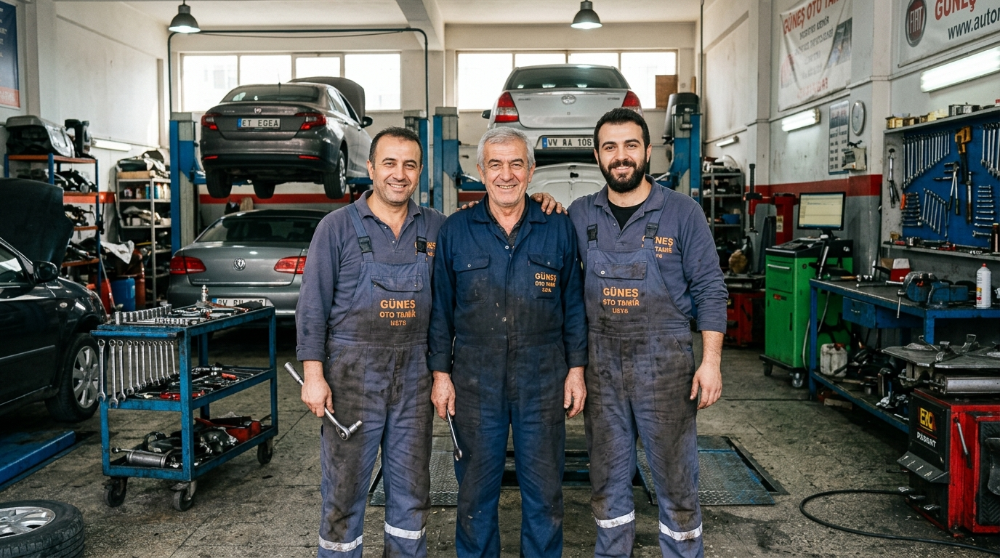
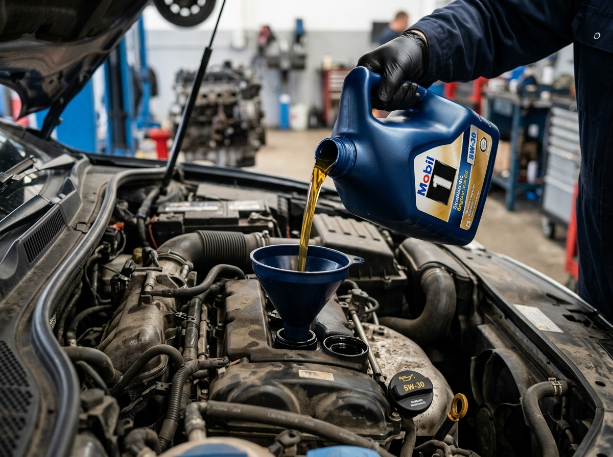
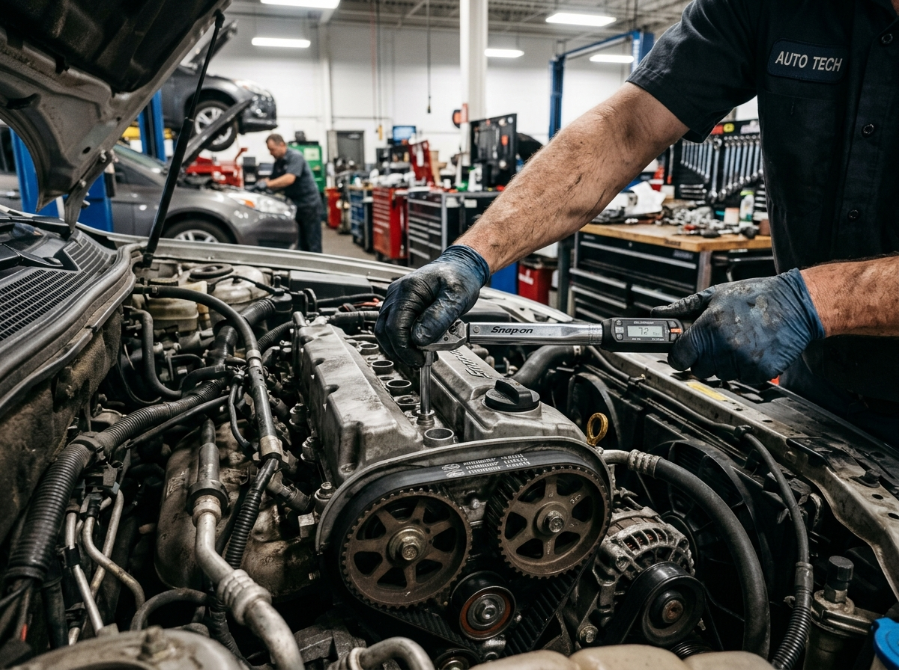
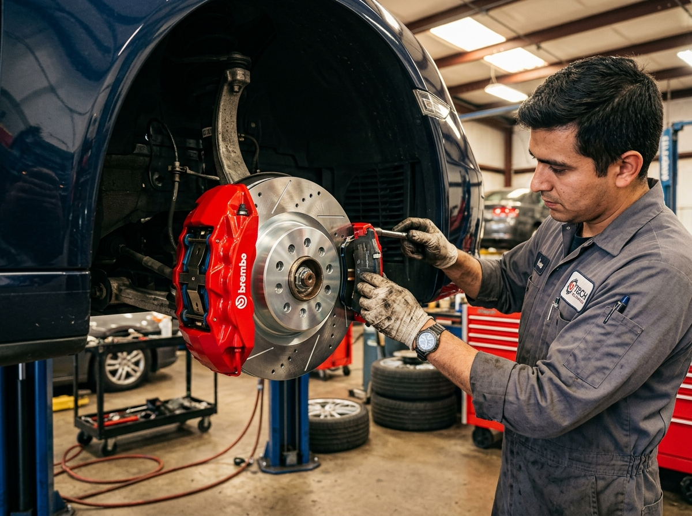
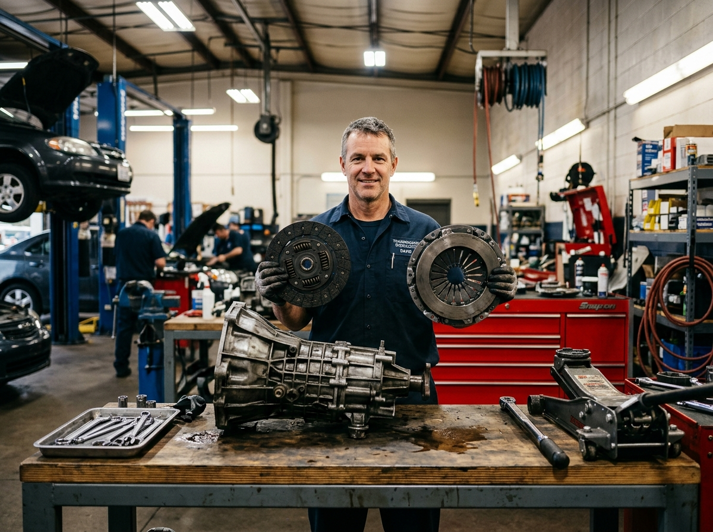
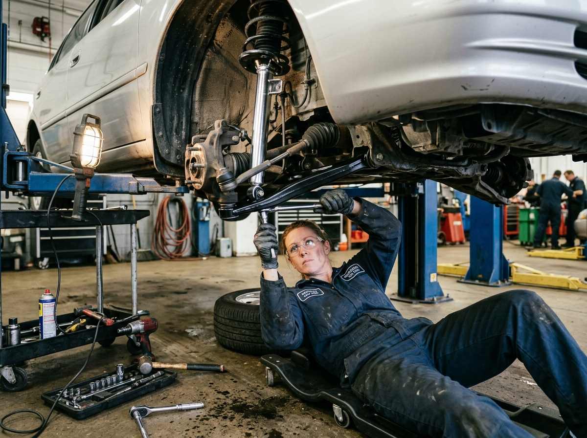
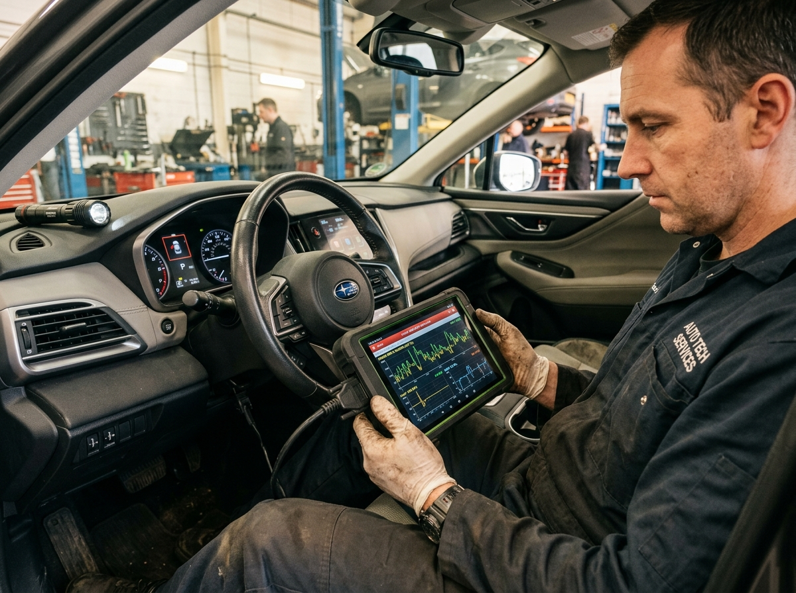

Kurucumuz rahmetli Hanifi Kalan'ın esnaflık ahlakıyla; Uğur Kalan, Oğuzhan Kalan ve Yavuz Selim Kalan olarak aracınızın tüm mekanik bakım ve onarımlarını garantili ve şeffaf şekilde gerçekleştiriyoruz.
Sanayide sürpriz masraflara son! Güveninizi zanaatımızla kazanıyoruz.

Kurucumuz ve babamız rahmetli Hanifi Kalan'ın oğulları olan Uğur Kalan, Oğuzhan Kalan ve Yavuz Selim Kalan tarafından işletilen Uğur Oto; Edremit Kızılay Sanayi Sitesi'nde dürüstlüğü ve ustalığı ilke edinmiş köklü bir aile işletmesidir.
3 usta kardeş toplam 65 yıllık mekanik birikimi tek çatı altında birleştirdi.
Aracınızın durumu hakkında WhatsApp üzerinden video ve fotoğraflı bilgilendirme.
Aracınızın başındaki ustayı bizzat tanıyın, aklınıza takılan her şeyi doğrudan ustamıza sorun.
Motor rektifiye, şanzıman, arıza teşhisi ve genel mekanik operasyonlarda 30 yıllık köklü sanayi deneyimi.
Fren sistemleri, alt takım, debriyaj baskı balata, süspansiyon ve mekanik parça montajında çeyrek asırlık uzmanlık.
Periyodik bakım, bilgisayarlı diagnostik, yeni nesil motor sistemleri ve soğutma mekaniğinde 10 yıllık dinamik tecrübe.
Aracınızın fabrikasyon standartlarını koruyan profesyonel servis, orijinal/eşdeğer parça ve garantili işçilik.

Önleyici BakımMotorun uzun ömürlü olması için kilometre ve yıl bakımları eksiksiz yapılır.

Ağır MekanikPerformans kaybı, yağ yakma, su eksiltme ve ses şikayetlerinde usta işi revizyon.

Sürüş GüvenliğiCan güvenliğiniz için fren mesafesini kısaltan, ses ve titremeyi yok eden hassas onarım.

Güç AktarımıVites geçişlerinde zorlanma, debriyaj kaçırma ve silkeleme sorunlarına kesin çözüm.

Yol TutuşuKasislerde ve çukurlarda gelen lokurtu ve tıkırtı seslerini giderip yol tutuşunu sıfırlarız.

Elektronik & TeşhisMotor arıza lambası söndürme ve sensör canlı veri analizi ile doğru arıza teşhisi.
Aracınızın markasını ve sorununuzu seçin, ustanız doğrudan WhatsApp üzerinden yanıtlasın.
Binek ve hafif ticari tüm yerli ve yabancı araçların mekanik yazılım ve katalog verilerine uygun bakım yapıyoruz.
Oto sanayi tecrübenizi güvenli, şeffaf ve konforlu kılan vazgeçilmez ilkelerimiz.
İşleme başlanmadan önce tespit edilen arızalar ve maliyet kalemleri size detaylıca sunulur; sürpriz faturalarla karşılaşmazsınız.
Aracınızdan sökülen tüm eski ve yıpranmış parçalar bagajınızda veya servisimizde size gösterilip teslim edilir.
Yaptığımız her mekanik işleme ve taktığımız her kaliteli yedek parçaya güveniyor, ustalığımızın arkasında duruyoruz.
Edremit Kızılay Sanayi Sitesi'nde merkezi ve kolay bulunabilir konumdayız.
Zeytinli Mah. 28374 Sokak Kızılay Sanayi Sitesi A Blok No: 3/4 Edremit / Balıkesir
Uğur Kalan: 0554 164 10 44
Oğuzhan Kalan: 0552 230 47 44
Yavuz Selim Kalan: 0552 539 98 44
+90 554 164 10 44 (Tıklayarak doğrudan sohbete başlayın)
Pazartesi – Cumartesi: 08:30 – 19:00
Pazar: Kapalı (Acil Yol Durumları için Arayınız)